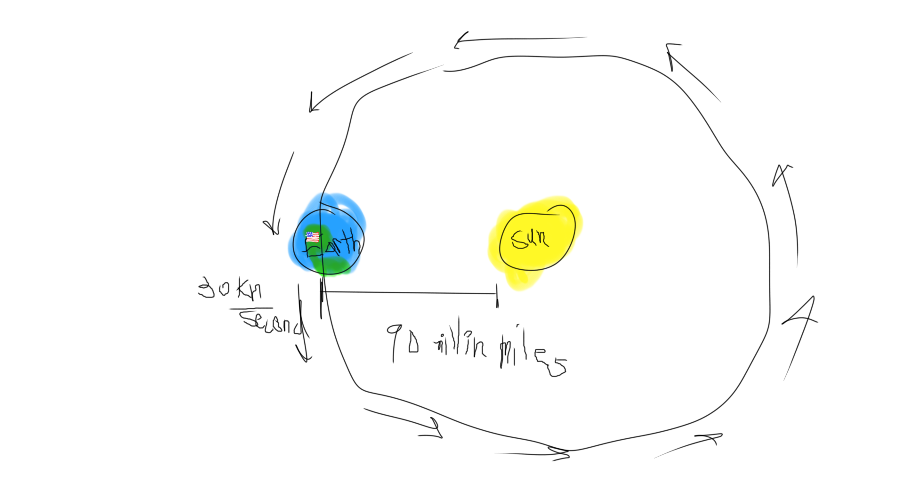
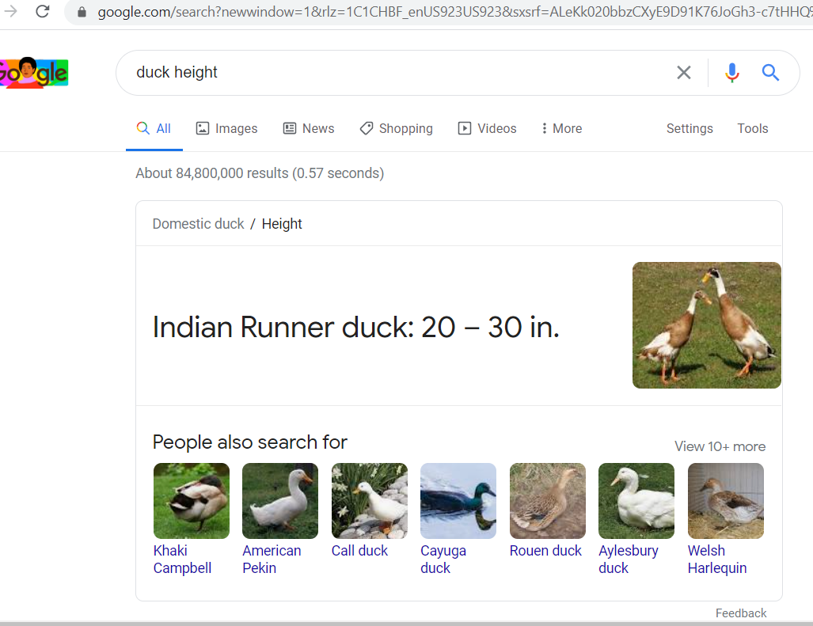

Hello!
If you were to stack ducks one on top of the other, how many would it take to reach the sun? The date of the stacking is February 8th.
Thank you!
Anonymous Reader
Ok, thank you, Anonymous reader! This is a very interesting question, since you'd have to be really a weirdo to ask it in the first place. Stacking ducks? What?
Well, ok, let's, I mean, we can do it. Let's see what that's all about, stacking ducks up to the Sun! That's crazy.
Ok, well, first thing is, the sun is a star that the Earth orbits. I think it's a pretty normal star. The Earth is nearly at the same distance from that star for as far as we care. It'is orbit is closer to a circle than anything you can draw.
The Earth, going around the Sun,The Earth goes around the Sun at about 30 kilo meters per second. We can turn this into miles using a special converter.. Or, we can use a formula, by dividing by 1/1609. 30 divided by 1609 is 18.645121193288, so, the Earth travels at 18.645121192288 miles a second around the sun. That's very fast! You don't want ducks moving that fast, or they'll fall apart. So, we have to be very careful about how we do this.
The question is pretty complicated because you can't just stack ducks. First, Ducks do not like to be stacked. If you even just put one on top of another one, they will probably walk away and be agitated. So, you have to handle that problem.
Second, you need to know how tall a duck is. Even if you handle the problem of keeping them still, you have to know how heigh you have to reach. The height of a tall duck is 20-30 centimeters according to Google.
But, this is the height of maybe the tallest ducks. And they're not going to be standing on the head of the duck below, but the back. So let's just say each duck will add 15 centimetesr to the chain. This distance can be converted to inches, if you want. Every centimeter is 2.54th of an inch, so you have to divide by 2.54. 15 divided by 2.54 is 5.90551181102, so the height of a typical duck is 5.90551181102 inches. We can't get any better than this, because we just don't know what our ducks looks like.
It looks like birds are calmed by diazepam, according to this website. Diazepam for Zebra Finches. You can get this medication easily, and I have a lot of extra. When the ducks have a small amount, they will be comfortable and able to be stacked. Each duck will take up 5.90551181102 of height.
If you're planning on stacking them by hand, you have to have a huge pile of ducks, and carry a duck from the pile to the stack, and place it on the stack. At first this will be very quick, but as the ducks get taller, you will have to throw the duck up, and then you'll have to start climbing the duckstack to reach the top to place the duck on top. This will take some time, and that will be more and more time as the stack gets taller, since you have to climb a taller stack to reach the top.
I bet I could climb 50 feet a minute on a ladder, so to be conservative, I will say a stack of ducks will take me 30 feet a minute, since it is not ideal like a ladder is for climbing.